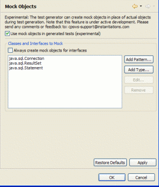

Mock objects are simulated objects that stand in for real objects, and respond to method calls in controlled ways. They are used in unit testing in order to isolate the code under test from specific dependencies. For instance, a unit test of an account management class shouldn’t depend on have a live database connection. You want to create a mock instance of that database connection, and have the account management class talk to that.
CodePro uses the EasyMock library to implement its mock object support. For examples and documentation of how to use EasyMock, see easymock.org.
You can configure CodePro’s use of mock objects through the CodePro > JUnit > Mock Objects preference page.
CodePro can use EasyMock version 1.2 or 2.4. If your test project already uses a specific version of EasyMock, CodePro will recognize and use that version. Otherwise, CodePro will default to using EasyMock 2.4. This version of EasyMock is more powerful and has simplier syntax. However, it requires Java 5 to run. If your project is limited to using Java 1.4 or earlier, CodePro will emit tests that use EasyMock 1.2.
It is good programming practice to create interfaces for services that are consumed by different parts of your application. This allows a good separation between the contract of a service and its implementation. It also allows easy mocking of that service for testing purposes. If you select the Always create mock objects for interfaces option, CodePro will use mock objects for interfaces in generated tests.
In many cases, it is not possible to use an interface for a service definition. You may not have control over the definition of a class, or you may be working with legacy code or be otherwise unable to refactor the class. For these cases, CodePro allows you to create mocks of concrete objects in generated tests.

We’ll illustrate using mock objects with a simple example:
/**
* A collection of JDBC helper methods.
*/
public final class DbUtils {
/**
* Close a <code>Connection</code>, avoid closing if null.
*
* @param conn Connection to close.
* @throws SQLException if a database access error occurs
*/
public static void close(Connection conn) throws SQLException {
if (conn != null) {
conn.close();
}
}
}
When we generate tests for this method (right click on the class in the Package Explorer and choose CodePro Tools > Generate Test Cases), we get the following test case:
public class DbUtilsTest extends TestCase {
/**
* Run the void close(Connection) method test.
*
* @generatedBy CodePro at 11/26/08 10:14 AM
*/
public void testClose_1()
throws Exception {
Connection conn = EasyMock.createMock(Connection.class);
// add mock object expections here
EasyMock.replay(conn);
DbUtils2.close(conn);
// add additional test code here
EasyMock.verify(conn);
}
When we execute this test, we get a test failure. The
Connection.close() method was called in the
DBUtils.close() method and the mock object had not been set up to expect this. In order to correct this failure, we modify the test to include the call to
close(). This practice of setting up the mock objects expectations to done before the call to
EasyMock.replay(). The new test looks like:
public void testClose_1()
throws Exception {
Connection conn = EasyMock.createMock(Connection.class);
// add mock object expections here
conn.close();
EasyMock.replay(conn);
DbUtils2.close(conn);
// add additional test code here
EasyMock.verify(conn);
}
This modified test passes. The steps to using mock objects in tests are:
For more examples of using mock objects in tests, see easymock.org.